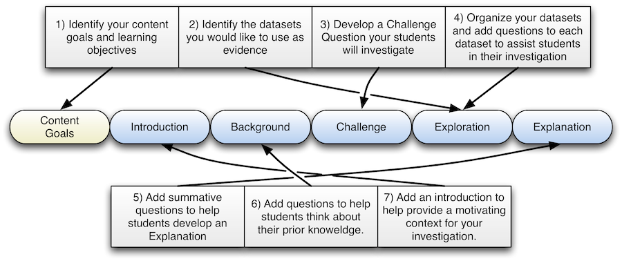

Homework Assignment
Ideally these would be videos of professors describing these categories of use. We can use folks from the usability testing- record them and publish to the tool interface
Lecture Demonstration
Laboratory Exercise
This tool will help you create an online homework assignment, lecture demonstration, or laboratory using archived or real time data from the Ocean Observing Initiative (OOI).
The OOI is a long-term, NSF funded program to provide 25-30 years of sustained ocean measurements to study climate variability, ocean circulation and ecosystem dynamics, air-sea exchange, seafloor processes, and plate-scale geodynamics. The OOI will enable powerful new scientific approaches for exploring the complexities of Earth-ocean-atmosphere interactions, thereby accelerating progress toward the goal of understanding, predicting, and managing our ocean environment.
Use this tool to help your undergraduate students learn how interpret scientific data and draw conclusions. We have made this software ?smart? in attempts to help you apply the latest and best information from the learning sciences to help you improve your students? ability to learn science content. The activities created with this tool are ideal for introductory undergraduate classes or as engagement activities for senior level classes.
More Copy
The tool will walk you through three steps for preparing, creating, and publishing an online lesson.
Student in undergraduate introductory science courses often complain that their courses lacked student?teacher dialogue, are overly focused on memorization, and lacked illustrations, applications, and implications of the material covered. To avoid these pitfalls, this tool will help you prepare:
More Copy
Create your own ocean science investigation
With this tool you can create an online inquiry-based activity, enabling your students to learn about ocean processes as they investigate datasets from the OOI or your own research.
Even if you are unfamiliar with how to conduct inquiry-based learning in your classroom, this tool will walk you through the steps needed to compose an effective activity. You will even be able to choose the appropriate inquiry level you desire. You can use the activities you create as either in-class or homework assignments, or both.
If you haven?t already, we also encourage you to check out the ?Featured Investigations? created by others. You can use those activities right away with your students, and you can even copy and modify them to fit your needs.